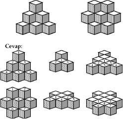

KÜPLERİ SAYINIZ
İlk bakışta çok kolay gözüküyor. Solda 6, sağda 7 küp var, fakat bunlar yalnız görünen küpler, acaba bu görünen küplerin arkasında saklanmış kaç küp olabilir? Problemi çözerken şu iki noktaya dikkat edin: Her iki grupta da küpler üç kat olarak dizilmiştir ve görünen küpler kendi arkalarında bulunan küpleri tamamen gizlemektedir.

Küplerin görünen dış sınırlarının arkasında kalabilecek her küp soruya cevaptır. Bu amaçla küp gruplarının 3., 2. ve 1. katları gösterilmiştir. Küplere numara verilmiştir; aynı sayıyı taşıyan küpler üst üste gelecektir.